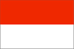
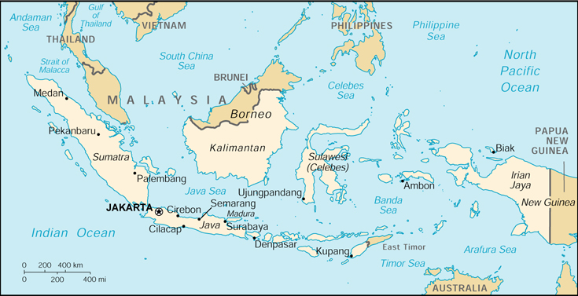

{kind=link}


| Indonesia |  |
|
|
 | |
| Introduction |
Background: The world's largest archipelago, Indonesia achieved independence from the Netherlands in 1949. Current issues include: implementing IMF-mandated reforms of the banking sector, effecting a transition to a popularly elected government after years of rule by dictators, addressing charges of cronyism and corruption among the Chinese-dominated business class, dealing with alleged human rights violations by the military, and resolving growing pressures for some form of autonomy or independence in certain regions such as Aceh and Irian Jaya. On 30 August 1999 a provincial referendum for independence was overwhelmingly approved by the people of Timor Timur. Concurrence followed by Indonesia's national legislature, and the name East Timor was provisionally adopted. The independent status of East Timor has yet to be formally established.
| Geography |
Location: Southeastern Asia, archipelago between the Indian Ocean and the Pacific Ocean
Geographic coordinates: 5 00 S, 120 00 E
Map references: Southeast Asia
Area:
total:
1,919,440 sq km
land:
1,826,440 sq km
water:
93,000 sq km
Area - comparative: slightly less than three times the size of Texas
Land boundaries:
total:
2,602 km
border countries:
Malaysia 1,782 km, Papua New Guinea 820 km
Coastline: 54,716 km
Maritime claims:
measured from claimed archipelagic baselines
exclusive economic zone:
200 nm
territorial sea:
12 nm
Climate: tropical; hot, humid; more moderate in highlands
Terrain: mostly coastal lowlands; larger islands have interior mountains
Elevation extremes:
lowest point:
Indian Ocean 0 m
highest point:
Puncak Jaya 5,030 m
Natural resources: petroleum, tin, natural gas, nickel, timber, bauxite, copper, fertile soils, coal, gold, silver
Land use:
arable land:
10%
permanent crops:
7%
permanent pastures:
7%
forests and woodland:
62%
other:
14% (1993 est.)
Irrigated land: 45,970 sq km (1993 est.)
Natural hazards: occasional floods, severe droughts, tsunamis, earthquakes, volcanoes
Environment - current issues: deforestation; water pollution from industrial wastes, sewage; air pollution in urban areas; smoke and haze from forest fires
Environment - international agreements:
party to:
Biodiversity, Climate Change, Desertification, Endangered Species, Hazardous Wastes, Law of the Sea, Nuclear Test Ban, Ozone Layer Protection, Ship Pollution, Tropical Timber 83, Tropical Timber 94, Wetlands
signed, but not ratified:
Climate Change-Kyoto Protocol, Marine Life Conservation
Geography - note: archipelago of 17,000 islands (6,000 inhabited); straddles Equator; strategic location astride or along major sea lanes from Indian Ocean to Pacific Ocean
| People |
Population: 224,784,210 (July 2000 est.)
Age structure:
0-14 years:
30.57% (male 34,932,102; female 33,783,603)
15-64 years:
64.96% (male 72,889,994; female 73,124,821)
65 years and over:
4.47% (male 4,413,268; female 5,640,422) (2000 est.)
Population growth rate: 1.63% (2000 est.)
Birth rate: 22.6 births/1,000 population (2000 est.)
Death rate: 6.31 deaths/1,000 population (2000 est.)
Net migration rate: 0 migrant(s)/1,000 population (2000 est.)
Sex ratio:
at birth:
1.05 male(s)/female
under 15 years:
1.03 male(s)/female
15-64 years:
1 male(s)/female
65 years and over:
0.78 male(s)/female
total population:
1 male(s)/female (2000 est.)
Infant mortality rate: 42.21 deaths/1,000 live births (2000 est.)
Life expectancy at birth:
total population:
67.96 years
male:
65.61 years
female:
70.42 years (2000 est.)
Total fertility rate: 2.61 children born/woman (2000 est.)
Nationality:
noun:
Indonesian(s)
adjective:
Indonesian
Ethnic groups: Javanese 45%, Sundanese 14%, Madurese 7.5%, coastal Malays 7.5%, other 26%
Religions: Muslim 88%, Protestant 5%, Roman Catholic 3%, Hindu 2%, Buddhist 1%, other 1% (1998)
Languages: Bahasa Indonesia (official, modified form of Malay), English, Dutch, local dialects, the most widely spoken of which is Javanese
Literacy:
definition:
age 15 and over can read and write
total population:
83.8%
male:
89.6%
female:
78% (1995 est.)
| Government |
Country name:
conventional long form:
Republic of Indonesia
conventional short form:
Indonesia
local long form:
Republik Indonesia
local short form:
Indonesia
former:
Netherlands East Indies; Dutch East Indies
Data code: ID
Government type: republic
Capital: Jakarta
Administrative divisions:
23 provinces (propinsi-propinsi, singular - propinsi), 2 special regions* (daerah-daerah istimewa, singular - daerah istimewa), and 1 special capital city district** (daerah khusus ibukota); Aceh*, Bali, Bengkulu, Irian Jaya, Jakarta Raya**, Jambi, Jawa Barat, Jawa Tengah, Jawa Timur, Kalimantan Barat, Kalimantan Selatan, Kalimantan Tengah, Kalimantan Timur, Lampung, Maluku, Nusa Tenggara Barat, Nusa Tenggara Timur, Riau, Sulawesi Selatan, Sulawesi Tengah, Sulawesi Tenggara, Sulawesi Utara, Sumatera Barat, Sumatera Selatan, Sumatera Utara, Yogyakarta*; note - there may be a new province named Maluku Utara
note:
following the 30 August 1999 provincial referendum for independence which was overwhelmingly approved by the people of Timor Timur and the October 1999 concurrence of Indonesia's national legislature, the name East Timor was adopted as a provisional name for the political entity formerly known as Propinsi Timor Timur until such time as the entity's independent status is formally established
Independence: 17 August 1945 (proclaimed independence; on 27 December 1949, Indonesia became legally independent from the Netherlands)
National holiday: Independence Day, 17 August (1945)
Constitution: August 1945, abrogated by Federal Constitution of 1949 and Provisional Constitution of 1950, restored 5 July 1959
Legal system: based on Roman-Dutch law, substantially modified by indigenous concepts and by new criminal procedures code; has not accepted compulsory ICJ jurisdiction
Suffrage: 17 years of age; universal and married persons regardless of age
Executive branch:
chief of state:
President Abdurrahman WAHID (since 20 October 1999); note - the president is both the chief of state and head of government
head of government:
President Abdurrahman WAHID (since 20 October 1999); note - the president is both the chief of state and head of government
cabinet:
Cabinet
elections:
president and vice president selected by vote of the People's Consultative Assembly for five-year terms; selection last held 20 October 1999 (next to be held by NA 2004)
election results:
Abdurrahman WAHID selected president by vote of the People's Consultative Assembly, receiving 373 votes to 313 votes for MEGAWATI; MEGAWATI Sukarnoputri selected vice president by vote of the People's Consultative Assembly
Legislative branch:
unicameral House of Representatives or Dewan Perwakilan Rakyat (DPR) (500 seats; 462 elected by popular vote, 38 are appointed military representatives; members serve five-year terms)
elections:
last held 7 June 1999 (next to be held NA June 2004)
election results:
percent of vote by party - PDI-P 37.4%, Golkar 20.9%, PKB 17.4%, PPP 10.7%, PAN 7.3%, PBB 1.8%, other 4.5%; seats by party - PDI-P 154, Golkar 120, PPP 58, PKB 51, PAN 35, PBB 14, other 30
note:
the People's Consultative Assembly (Majelis Permusyawaratan Rakyat or MPR) includes the DPR plus 200 indirectly selected members; it meets every five years to elect the president and vice president and to approve the broad outlines of national policy
Judicial branch: Supreme Court (Mahkamah Agung), the judges are appointed by the president
Political parties and leaders: Crescent Moon and Star Party or PBB [Yusril Ihza MAHENDRA, chairman]; Development Unity Party or PPP (federation of former Islamic parties) [Hamzah HAZ, chairman]; Golkar [Akbar TANSUNG, general chairman]; Indonesia Democracy Party or PDI (federation of former Nationalist and Christian Parties) [Budi HARDJONO, chairman]; Indonesia Democracy Party-Struggle or PDI-P [MEGAWATI Sukarnoputri, chairperson]; National Awakening Party or PKB [Abdurrahman WAHID]; National Mandate Party or PAN [Amien RAIS, chairman]
International organization participation: APEC, AsDB, ASEAN, CCC, CP, ESCAP, FAO, G-15, G-19, G-77, IAEA, IBRD, ICAO, ICC, ICFTU, ICRM, IDA, IDB, IFAD, IFC, IFRCS, IHO, ILO, IMF, IMO, Inmarsat, Intelsat, Interpol, IOC, IOM (observer), ISO, ITU, NAM, OIC, OPCW, OPEC, UN, UNCTAD, UNESCO, UNIDO, UNIKOM, UNMIBH, UNMOP, UNMOT, UNOMIG, UPU, WCL, WFTU, WHO, WIPO, WMO, WToO, WTrO
Diplomatic representation in the US:
chief of mission:
Ambassador Maleeha LODHI
chancery:
2020 Massachusetts Avenue NW, Washington, DC 20036
telephone:
[1] (202) 775-5200
FAX:
[1] (202) 775-5365
consulate(s) general:
Chicago, Houston, Los Angeles, New York, and San Francisco
Diplomatic representation from the US:
chief of mission:
Ambassador Robert GELBARD
embassy:
Medan Merdeka Selatan 5, Jakarta
mailing address:
Unit 8129, Box 1, APO AP 96520
telephone:
[62] (21) 344-2211
FAX:
[62] (21) 386-2259
consulate(s) general:
Surabaya
Flag description: two equal horizontal bands of red (top) and white; similar to the flag of Monaco, which is shorter; also similar to the flag of Poland, which is white (top) and red
| Economy |
Economy - overview: The Indonesian economy stabilized in 1999, following the sharp contraction and high inflation of 1998. By following tight monetary policy, the government reduced inflation from over 70% in 1998 to 2% in 1999. Although interest rates spiked as high as 70% in response to the monetary contraction, they fell rapidly to the 10% to 15% range. The economy stopped its free-fall as GDP showed some growth in the second half of 1999, although GDP for the year as a whole showed no growth. The government managed to recapitalize a handful of private banks and has begun recapitalizing the state-owned banking sector. New lending, however, remains almost unavailable as banks continue to be wary of issuing new debt in an environment where little progress has been made in restructuring the huge burden of outstanding debts. IMF payments were suspended late in 1999 as the result of evidence that a private bank had illegally funneled payments it received from the government to one of the political parties. The government has forecast growth of 3.8% for FY00/01. The spread of sectarian violence and continuing dissatisfaction with the pace of bank and debt restructuring will make it difficult for Indonesia to attract the private investment necessary to achieve this goal.
GDP: purchasing power parity - $610 billion (1999 est.)
GDP - real growth rate: 0% (1999 est.)
GDP - per capita: purchasing power parity - $2,800 (1999 est.)
GDP - composition by sector:
agriculture:
21%
industry:
35%
services:
44% (1999 est.)
Population below poverty line: NA%
Household income or consumption by percentage share:
lowest 10%:
3.6%
highest 10%:
30.3% (1996)
Inflation rate (consumer prices): 2% (1999 est.)
Labor force: 88 million (1998)
Labor force - by occupation: agriculture 45%, trade, restaurant, and hotel 19%, manufacturing 11%, transport and communications 5%, construction 4% (1998)
Unemployment rate: 15%-20% (1998 est.)
Budget:
revenues:
$25.4 billion (of which $6 billion is from international financial institutions)
expenditures:
$25.4 billion, including capital expenditures of $NA (FY99/00 est.)
Industries: petroleum and natural gas; textiles, apparel, and footwear; mining, cement, chemical fertilizers, plywood; rubber; food; tourism
Industrial production growth rate: 1.5% (1999 est.)
Electricity - production: 73.13 billion kWh (1998)
Electricity - production by source:
fossil fuel:
88.19%
hydro:
8.39%
nuclear:
0%
other:
3.42% (1998)
Electricity - consumption: 68.011 billion kWh (1998)
Electricity - exports: 0 kWh (1998)
Electricity - imports: 0 kWh (1998)
Agriculture - products: rice, cassava (tapioca), peanuts, rubber, cocoa, coffee, palm oil, copra; poultry, beef, pork, eggs
Exports: $48 billion (f.o.b., 1999 est.)
Exports - commodities: oil and gas, plywood, textiles, rubber
Exports - partners: Japan 18%, EU 15%, US 14%, Singapore 13%, South Korea 5%, Hong Kong 4%, China 4%, Taiwan 3% (1999 est.)
Imports: $24 billion (c.i.f., 1999 est.)
Imports - commodities: machinery and equipment; chemicals, fuels, foodstuffs
Imports - partners: Japan 17%, US 13%, Singapore 10%, Germany 9%, Australia 6%, South Korea 5%, Taiwan 3%, China 3% (1999 est.)
Debt - external: $140 billion (1998 est.)
Economic aid - recipient: $43 billion from IMF program and other official external financing (1997-2000)
Currency: Indonesian rupiah (Rp) = 100 sen
Exchange rates: Indonesian rupiahs (Rp) per US$1 - 7,278.8 (January 2000), 7,855.2 (1999), 10,013.6 (1998), 2,909.4 (1997), 2,342.3 (1996), 2,248.6 (1995)
Fiscal year: 1 April - 31 March
| Communications |
Telephones - main lines in use: 3.291 million (1995)
Telephones - mobile cellular: 1.2 million (1998)
Telephone system:
domestic service fair, international service good
domestic:
interisland microwave system and HF radio police net; domestic satellite communications system
international:
satellite earth stations - 2 Intelsat (1 Indian Ocean and 1 Pacific Ocean)
Radio broadcast stations: AM 678, FM 43, shortwave 82 (1998)
Radios: 31.5 million (1997)
Television broadcast stations: 41 (1999)
Televisions: 13.75 million (1997)
Internet Service Providers (ISPs): 24 (1999)
| Transportation |
Railways:
total:
6,458 km
narrow gauge:
5,961 km 1.067-m gauge (101 km electrified; 101 km double track); 497 km 0.750-m gauge (1995)
Highways:
total:
342,700 km
paved:
158,670 km
unpaved:
184,030 km (1997 est.)
Waterways: 21,579 km total; Sumatra 5,471 km, Java and Madura 820 km, Kalimantan 10,460 km, Sulawesi (Celebes) 241 km, Irian Jaya 4,587 km
Pipelines: crude oil 2,505 km; petroleum products 456 km; natural gas 1,703 km (1989)
Ports and harbors: Cilacap, Cirebon, Jakarta, Kupang, Palembang, Semarang, Surabaya, Ujungpandang
Merchant marine:
total:
586 ships (1,000 GRT or over) totaling 2,676,875 GRT/3,700,864 DWT
ships by type:
bulk 38, cargo 346, chemical tanker 9, container 19, liquified gas 5, livestock carrier 1, passenger 7, passenger/cargo 13, petroleum tanker 114, refrigerated cargo 1, roll-on/roll-off 11, short-sea passenger 8, specialized tanker 9, vehicle carrier 5 (1999 est.)
Airports: 446 (1999 est.)
Airports - with paved runways:
total:
127
over 3,047 m:
4
2,438 to 3,047 m:
12
1,524 to 2,437 m:
39
914 to 1,523 m:
41
under 914 m:
31 (1999 est.)
Airports - with unpaved runways:
total:
319
1,524 to 2,437 m:
5
914 to 1,523 m:
33
under 914 m:
281 (1999 est.)
Heliports: 4 (1999 est.)
| Military |
Military branches: Army, Navy, Air Force, National Police
Military manpower - military age: 18 years of age
Military manpower - availability:
males age 15-49:
62,948,286 (2000 est.)
Military manpower - fit for military service:
males age 15-49:
36,826,282 (2000 est.)
Military manpower - reaching military age annually:
males:
2,273,324 (2000 est.)
Military expenditures - dollar figure: $1 billion (FY98/99)
Military expenditures - percent of GDP: 1.3% (FY98/99)
| Transnational Issues |
Disputes - international: Sipadan and Ligitan Islands in dispute with Malaysia
Illicit drugs: illicit producer of cannabis largely for domestic use; possible growing role as transshipment point for Golden Triangle heroin